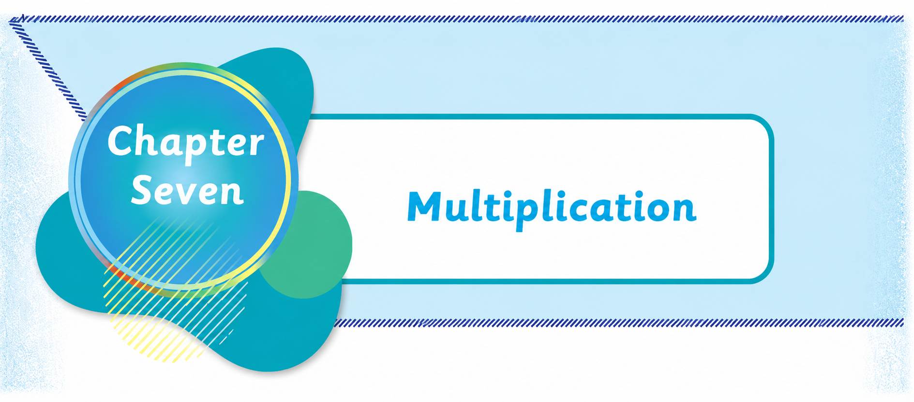
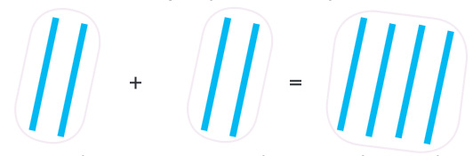

Chapter Seven
Multiplication
Multiplication using objects
Multiplication is a repeated addition of a number or objects. The operation of multiplication is represented by the sign ×. For example, 2 × 1 is read as, 2 multiplied by 1. It is also read as 2 times 1.
Example 1
2 × 1 =
Steps
1.
Put two cups in one group only once.
This means,
2 × 1
2.
Add the number of cups.
The sum is 2 cups.
Therefore, 2 × 1 = 2.
Example 2
2 × 2 =
Solution

Two sticks
Two sticks
Four sticks
Therefore, 2 × 2 = 4.